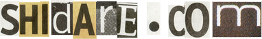

;-- dreams of unicorns:
0x00; main
0x01; profile
0x02; projects
0x03; portfolio
0x04; contact
;-- section.1.__TEXT.__projects:
0x02; projects
;-- section.2.__TEXT.__street_photography_and_philosophy:
2023/07/18; Survival
---BEGIN---
Hoy invertimos lo mejor de nuestro empeño en alargar la vida.
En realidad, la vida se está reduciendo a superviviencia.
La histeria de la salud y la manía de la optimización son reflejos
ante la falta de ser reinante. Procuramos compensar el déficit
de ser por medio de la prolongación de la vida desnuda. Entretanto,
perdemos todo sentido de la vida intensa. La confundimos con más
produccióin, más rendimiento y consumo, los cuales, sin embargo,
no constituyen más que formas de superviviencia.
El régimen neoliberal aumenta la productividad aislando a las
personas y entregándolas a una brutal competencia. Transforma la
vida en una lucha por la superviencia, en un infierno de competencia
desenfrenada.
Éxito, rendimiento y competición son formas de supervivencia.
Byung Chul Han, (2023). Contemplative life. Taurus.
---END---

;-- section.3.__TEXT.__footer:


Copyright (c) 2004-2023 JS
http://www.shidare.com created by JS a.k.a. "edwsec"